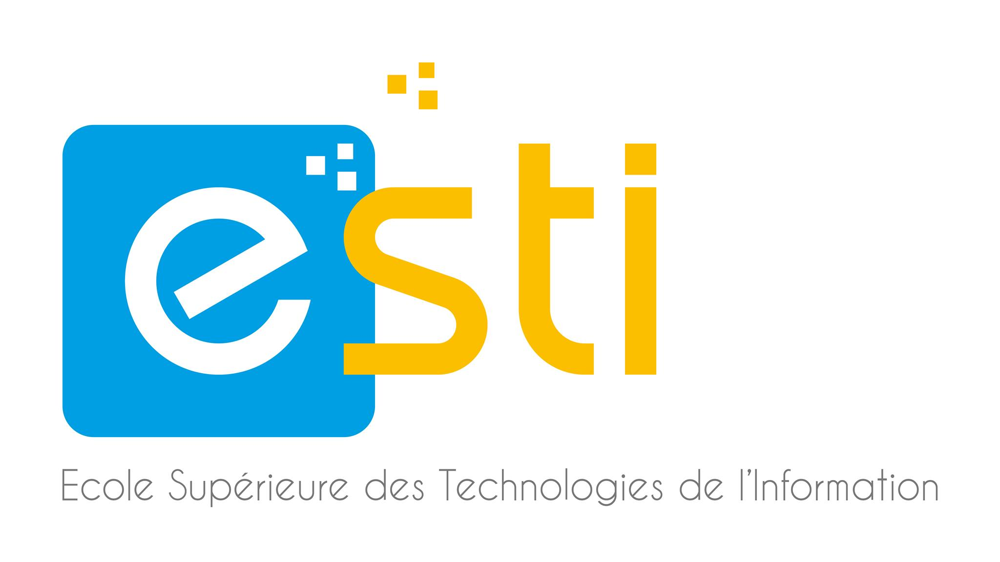

À l'occasion de la Journée internationale de l'éducation, rappelons que l'éducation est la clé du progrès d'un pays. Elle libère le potentiel individuel, forme des citoyens éclairés et stimule le développement.
Dans notre université, spécialisée dans les technologies de l'information, nous nous engageons à fournir une éducation rigoureuse, poussant nos étudiants à atteindre l'excellence pour s'assurer un avenir prometteur.
+261 34 07 082 23 / +261 34 04 138 16
𝐄𝐦𝐚𝐢𝐥 : contact@grande-ecole-it.com
Préparez-vous à révolutionner vos compétences numériques. Ne manquez pas cette chance. Rejoignez notre formation intensive, spécialement conçue pour les passionnés du code, avec des sessions dynamiques tous les samedis !

10 collaborateurs du Ministère de l'Education Nationale (MEN) ont reçu ce 10 Mai 2024 leur attestation de fin de formation sur le module "𝐒𝐭𝐚𝐭𝐢𝐬𝐭𝐢𝐜𝐚𝐥 𝐏𝐚𝐜𝐤𝐚𝐠𝐞 𝐟𝐨𝐫 𝐭𝐡𝐞 𝐒𝐨𝐜𝐢𝐚𝐥 𝐒𝐜𝐢𝐞𝐧𝐜𝐞𝐬 (𝐒𝐏𝐒𝐒)" à l'ESTI.
Faites comme eux, rejoignez-nous pour vos besoins en formations
Email : formation.continue@esti.mg
tel : 032 11 635 03 / 032 11 635 08